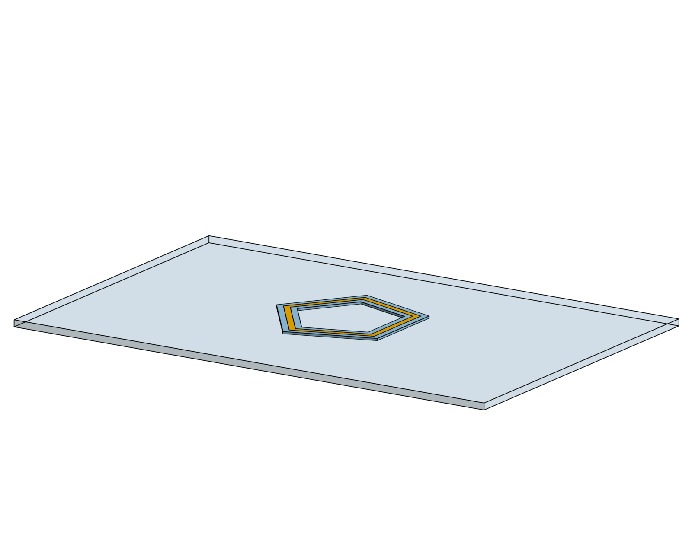
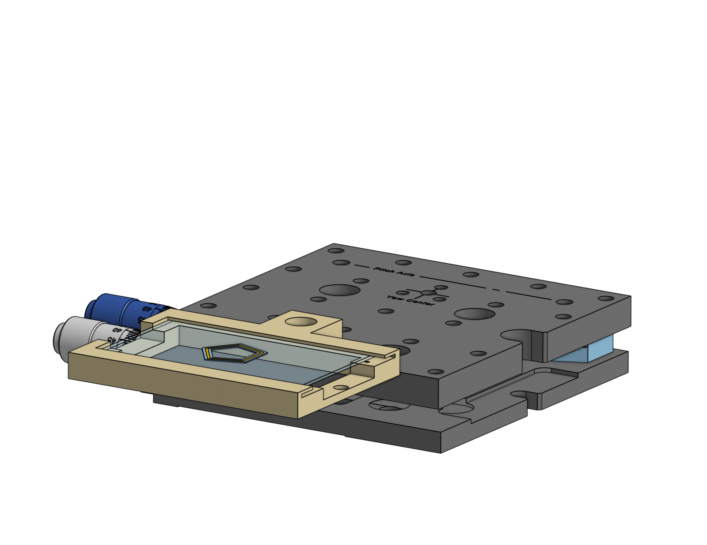
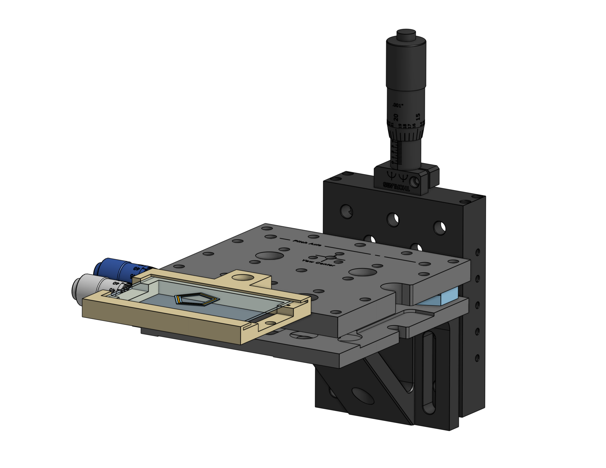
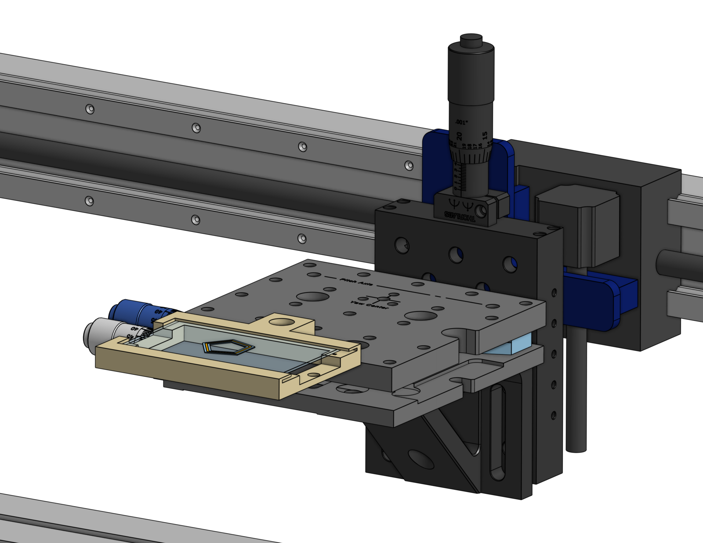
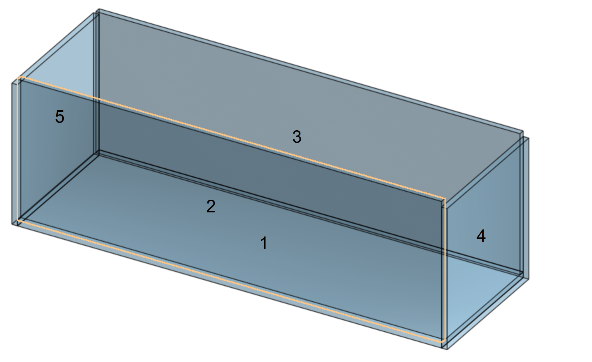
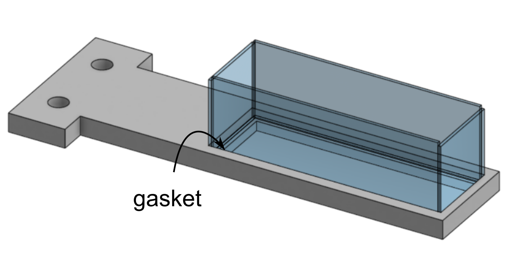

Fundamentally, a CNC mill is just a 3-axis gantry with a drill attached to it. We ordered our Shopbot without the drill, so it just becomes a 3-axis gantry. There are a couple of ways you can set up your printer from here.
A) Attach the nozzle to the gantry
- or -
B) Attach the stage to the gantry
We chose to attach the stage to the gantry for our research printer. We have a lot of equipment in our printer that coordinates with the nozzle. We have multiple cameras viewing the nozzle, lighting elements aligned with the nozzle, tubes feeding ink into the nozzle, heavy positioning elements that keep everything aligned, and barriers between these elements and the nozzle to protect them from spluttering and splashing. If we mounted the nozzle on the gantry, we would also need to mount all of those other elements on the gantry so they would all move together. That's a lot of weight, much of which will need to be cantilevered out from the mounting position. Ultimately, that means shaky videos and limited print speeds. If you mount the stage on the gantry, all of that weight can be mounted statically on the base of the printer.
Another benefit of mounting the stage on the gantry is that you can set up multiple stations. Version 1 of this printer had 3 stations: an ink nozzle, a support nozzle, and a curing lamp. Version 2 had 2 stations: an ink nozzle and a curing lamp. If you mount the stage on the gantry, you can add as many nozzles and stations as you want without adding any weight to the gantry, and you can maintain a distance between curing elements and nozzles, limiting the chance of accidentally curing fluid inside of the nozzle.
This page describes two stage designs:In direct ink writing, fluid ink is extruded out of a nozzle, written layer-by-layer onto a substrate, and then cured after deposition. This is much like the most popular form of 3D printing, Fused Deposition Modeling (FDM). If you've seen a 3D printer in your local library or somebody's house, it was probably an FDM. FDMs work by extruding a thermoplastic filament (i.e. polymer that you can heat up and cool down and maintain the same structure) through a hot nozzle, and letting it solidify by cooling. DIW has a wider range of materials, which could be thermosets (polymers that you can't heat up and cool down and maintain the same structure), ceramic slurries, hydrogels, concrete, chocolate, and more. You might cure DIW inks using light, heat, dipping them into a bath containing crosslinking molecules, and more.
Because DIW is a layer-by-layer process, you print onto a flat plate. We used 3" by 2" glass slides.
These glass slides fit into a 3D printed adapter we designed, which grips the slide and prevents it from jangling against the stage. It also leaves the space underneath the slide open, so we can collect videos and light the printing process from underneath the stage. The glass slide can slide in and out from within the lip of the holder. The yellow holder is 3D printed using an Objet inkjet printer.
The slide holder is then mounted onto a tilting stage. A tilting stage is essential when writing directly onto the stage. The one we used was discontinued, but a version from Thorlabs is shown in this CAD image. The knobs on the tilting stage give you fine control over the tilt of the stage, so you can ensure that the stage is perfectly level. If it is not level, the distance between the stage and the nozzle will vary at different points on the stage, which could lead to your filament rupturing or leaking out the front of the nozzle.
Knowing that the distance between the nozzle and the stage is important, we mounted the tilting stage onto a positioning stage. The knob on the positioning stage lets us control the z-position very finely, by hand. Our height calibration procedure contains a step where we bring the stage in contact with the nozzle, then zero the z-position. You can do this using the mechanized controls on the printer, but a manual knob gives you an extra sense to use, so you can feel the point where the stage hits the nozzle.
The vertical positioning stage is mounted directly onto the blue front plate of the Shopbot gantry, which moves up and down. It is easiest to install these components in reverse order, i.e. the vertical positioning stage, then the tilt stage, which we mount with a right-angle bracket to limit vibrations, and then the 3D printed slide holder. The configuration shown below puts some space between the slide and the gantry, to prevent the gantry from crashing into the nozzle and accessories.
| Part | Qty | Link |
|---|---|---|
| Glass box holder | 1 | shop_diagrams/glass_box_holder.pdf |
| Glass boxes | 3 + 2/3 glass slides per box + epoxy | |
| Right angle bracket | 1 | thorlabs.com/thorproduct.cfm?partnumber=AB90A |
| Mounting plate | 1 | thorlabs.com/thorproduct.cfm?partnumber=UBP2 |
Embedded 3D printing is similar to Direct Ink Writing, in that there is still fluid flowing out of a nozzle. The more popular form of Embedded 3D printing, Embedded Ink Writing, uses filaments, or continuous lines, to create structures. Another form of Embedded 3D printing, Embedded Droplet Printing, uses droplets to create structures. Both use the same stage setup. Instead of printing onto a flat stage, the nozzle is embedded in a bath full of support fluid. Usually, this support fluid is fluid-like when the nozzle is traveling through it and solid-like when the nozzle is absent.
The support bath design is much less complicated and uses glass boxes. These boxes are just composed of 75 mm x 25 mm x 1 mm glass slides, glued together. To assemble a glass box, begin with a full glass slide. Tape the other two glass slides to the bottom slide, such that they sit on top of the slide, flush with the edge. Break another slide into thirds. Tape the squares to ends of the box, such that they sit next to the end of the other slides, flush with the other sides. Once everything is taped together, epoxy the inner edges (use a dispensing nozzle for clean lines), wait for the epoxy to dry, and remove the tape. If done correctly, the entire assembly will have dimensions of 77 mm x 25 mm x 26 mm.
The glass boxes slip into a machined aluminum adapter, which contains a depression with a gasket that holds the boxes in place. The advantage of this design is that you can load the support fluid into the bath, mount it on the printer, print your structure, and then remove the whole print from the printer and further process it, all in the same container. This format is also useful for preventing bubbles, for support fluids which are liquid just after mixing, but gel over time. You can pour the fluid directly into glass boxes after mixing and tap gently to remove any bubbles. If the support fluid is poured into the container after gelation, it can be difficult to remove bubbles. The other advantage of this design is that the boxes are transparent on all sides, allowing for comprehensive imaging.
This assembly is lightweight and can be mounted onto the Shopbot with a right angle bracket. No tilting stage is necessary, as long as the print does not touch the bottom of the bath, because it won't matter if the print is slightly tilted inside the bath. The right angle bracket can be mounted on a universal base plate, and the universal base plate can be mounted onto the moving platform of the Shopbot.